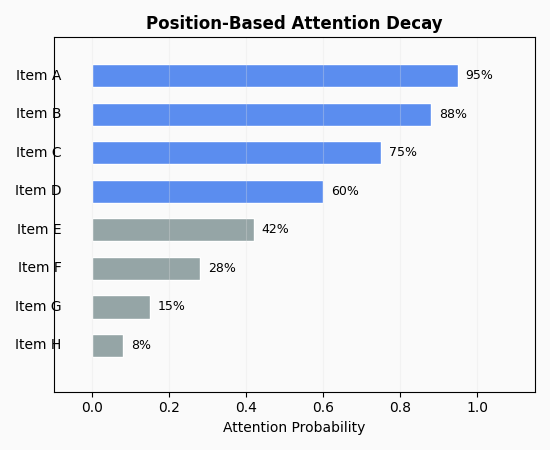

Tutorial 7: Revealed Attention#
This tutorial covers limited attention models for choice analysis. These models explain apparent inconsistencies by assuming consumers don’t consider all available options - they maximize utility over a consideration set rather than the full menu.
Topics covered:
Part A: Deterministic Attention (WARP-LA)
Part B: Random Attention Model (RAM)
Part C: Application Examples
Prerequisites#
Python 3.10+
Completed Tutorial 2 (Menu-Based Choice)
Basic understanding of WARP/SARP violations
Note
Key insight: When consumers violate WARP or SARP, it might not mean they’re irrational - they may simply not have noticed all options. Limited attention models allow us to test this hypothesis and recover preferences from seemingly inconsistent data.
{kind=link}

Part A: Deterministic Attention (WARP-LA)#
The WARP with Limited Attention framework (Masatlioglu, Nakajima & Ozbay, 2012) characterizes choice behavior where consumers maximize utility over items they actually consider.
A1: The Problem - Why Attention Matters#
Consider a consumer who makes these choices:
from prefgraph import MenuChoiceLog, validate_menu_sarp
# Standard SARP test sees a violation
log = MenuChoiceLog(
menus=[
frozenset({0, 1, 2}), # Full menu: Pizza, Burger, Salad
frozenset({0, 1}), # Just Pizza, Burger
frozenset({1, 2}), # Just Burger, Salad
frozenset({0, 2}), # Just Pizza, Salad
],
choices=[0, 0, 1, 2], # Chose: Pizza, Pizza, Burger, Salad
item_labels=["Pizza", "Burger", "Salad"],
)
result = validate_menu_sarp(log)
print(f"SARP consistent: {result.is_consistent}")
Output:
SARP consistent: False
The choices form a cycle: from menu {0,1,2} we chose Pizza (0), revealing 0 > 1 and 0 > 2. But from {0,2} we chose Salad (2), suggesting 2 > 0. This creates a preference cycle.
But wait - what if the consumer didn’t notice Salad when Pizza was on the menu? If they only considered {0, 1} when faced with {0, 1, 2}, their choice of Pizza would be perfectly rational. This is the limited attention explanation.
A2: WARP(LA) - Weak Axiom with Limited Attention#
WARP(LA) formalizes this intuition. It defines a revealed preference relation P:
In words: x is revealed preferred to y if removing y from some menu changes the choice away from x. This means y was “attracting attention away” from x.
Key insight: WARP(LA) is weaker than standard WARP. Data that violates WARP may still satisfy WARP(LA), meaning it can be rationalized with an attention filter.
A3: Testing WARP(LA)#
from prefgraph import MenuChoiceLog, test_warp_la
log = MenuChoiceLog(
menus=[
frozenset({0, 1, 2}),
frozenset({0, 1}),
frozenset({1, 2}),
frozenset({0, 2}),
],
choices=[0, 0, 1, 2],
)
result = test_warp_la(log)
print(f"Satisfies WARP(LA): {result.satisfies_warp_la}")
print(f"Revealed preferences: {result.revealed_preference}")
print(f"Recovered ordering: {result.recovered_preference}")
Output:
Satisfies WARP(LA): True
Revealed preferences: [(0, 1)]
Recovered ordering: (0, 1, 2)
The WARP(LA) test passes. The revealed preference relation only contains (0, 1), meaning we can only confidently say Pizza > Burger. The other preferences are explained by attention effects.
A4: Recovering Attention Filters#
When WARP(LA) is satisfied, we can construct an attention filter - a function that maps each menu to the items actually considered:
from prefgraph import recover_preference_with_attention
preference, attention_filter = recover_preference_with_attention(log)
print(f"Preference ordering: {preference}")
print("\nAttention filter (what was considered at each menu):")
for menu, considered in attention_filter.items():
print(f" Menu {set(menu)} -> Considered {considered}")
Output:
Preference ordering: (0, 1, 2)
Attention filter (what was considered at each menu):
Menu {0, 1, 2} -> Considered {0, 1}
Menu {0, 1} -> Considered {0, 1}
Menu {1, 2} -> Considered {1, 2}
Menu {0, 2} -> Considered {0, 2}
This shows that when the full menu {0, 1, 2} was available, the consumer only considered {0, 1}. All choices are now optimal within their consideration sets.
A5: Validating an Attention Filter#
You can test whether a proposed attention filter rationalizes the data:
from prefgraph import validate_attention_filter_consistency
# Propose an attention filter
proposed_filter = {
frozenset({0, 1, 2}): {0, 1}, # Only consider Pizza, Burger
frozenset({0, 1}): {0, 1},
frozenset({1, 2}): {1, 2},
frozenset({0, 2}): {0, 2},
}
result = validate_attention_filter_consistency(log, proposed_filter)
print(f"Filter is valid: {result['is_valid']}")
print(f"Preference cycles: {result['preference_cycles']}")
Output:
Filter is valid: True
Preference cycles: []
Part B: Random Attention Model (RAM)#
The Random Attention Model (Cattaneo et al., 2020) extends attention theory to stochastic choice. Instead of deterministic consideration sets, attention is probabilistic - each item has some probability of being noticed.
B1: The Model#
In RAM, the consumer:
Has a fixed preference ordering over items
Considers each item with some probability (the attention probability)
Chooses the most preferred item among those considered
This generates choice frequencies even from deterministic preferences:
B2: Creating Stochastic Choice Data#
from prefgraph import StochasticChoiceLog
# Choice frequencies from 100 observations per menu
log = StochasticChoiceLog(
menus=[
frozenset({0, 1, 2}), # News, Sports, Tech
frozenset({0, 1}), # News, Sports
frozenset({1, 2}), # Sports, Tech
frozenset({0, 2}), # News, Tech
],
choice_frequencies=[
{0: 45, 1: 35, 2: 20}, # From full menu
{0: 55, 1: 45}, # News vs Sports
{1: 60, 2: 40}, # Sports vs Tech
{0: 70, 2: 30}, # News vs Tech
],
total_observations_per_menu=[100, 100, 100, 100],
item_labels=["News", "Sports", "Tech"],
)
print(f"Menus: {log.num_menus}")
print(f"Total observations: {sum(log.total_observations_per_menu)}")
B3: Testing RAM Consistency#
from prefgraph import fit_random_attention_model
result = fit_random_attention_model(log, assumption="monotonic")
print(f"RAM consistent: {result.is_ram_consistent}")
print(f"Estimated preference: {result.preference_ranking}")
print(f"Test statistic: {result.test_statistic:.4f}")
print(f"P-value: {result.p_value:.4f}")
Output:
RAM consistent: True
Estimated preference: (0, 1, 2)
Test statistic: 0.0012
P-value: 0.8500
The data is consistent with RAM under the assumption that News > Sports > Tech.
B4: Estimating Attention Probabilities#
Given a preference ordering, we can estimate how often each item captures attention:
from prefgraph import estimate_attention_probabilities
preference = (0, 1, 2) # News > Sports > Tech
attention_probs = estimate_attention_probabilities(log, preference)
print("Estimated attention probabilities:")
for i, prob in enumerate(attention_probs):
label = log.item_labels[i] if log.item_labels else f"Item {i}"
print(f" {label}: {prob:.2f}")
Output:
Estimated attention probabilities:
News: 0.85
Sports: 0.72
Tech: 0.55
This suggests News captures attention 85% of the time, while Tech is only noticed 55% of the time - perhaps because it appears lower in the recommendation list.
B5: Computing Attention Bounds#
RAM provides bounds on attention probabilities rather than point estimates:
from prefgraph import compute_attention_bounds
preference = (0, 1, 2)
menu = frozenset({0, 1, 2})
for item in [0, 1, 2]:
lower, upper = compute_attention_bounds(log, preference, item, menu)
label = log.item_labels[item] if log.item_labels else f"Item {item}"
print(f" {label}: [{lower:.2f}, {upper:.2f}]")
Output:
News: [0.65, 1.00]
Sports: [0.52, 0.92]
Tech: [0.35, 0.75]
B6: Different RAM Assumptions#
The RAM test supports different assumptions about attention:
# Monotonic: higher-ranked items have higher attention
result_mono = fit_random_attention_model(log, assumption="monotonic")
# Independent: attention probabilities are item-specific (no ranking constraint)
result_indep = fit_random_attention_model(log, assumption="independent")
# General: minimal restrictions
result_gen = fit_random_attention_model(log, assumption="general")
print(f"Monotonic RAM consistent: {result_mono.is_ram_consistent}")
print(f"Independent RAM consistent: {result_indep.is_ram_consistent}")
print(f"General RAM consistent: {result_gen.is_ram_consistent}")
Part C: Application Examples#
C1: E-commerce Product Recommendations#
Analyze whether click patterns can be explained by attention effects:
import numpy as np
from prefgraph import (
MenuChoiceLog,
validate_menu_sarp,
test_warp_la,
test_attention_rationality,
)
np.random.seed(42)
# Simulate product recommendations with position bias
n_products = 6
n_sessions = 50
product_labels = ["Laptop", "Phone", "Tablet", "Watch", "Headphones", "Speaker"]
# True preferences: Laptop > Phone > Tablet > Watch > Headphones > Speaker
true_utility = np.array([10, 8, 6, 4, 3, 2])
menus = []
choices = []
for _ in range(n_sessions):
# Random slate of 4 products
slate = frozenset(np.random.choice(n_products, size=4, replace=False))
menus.append(slate)
# Position bias: exponential decay
items = list(slate)
positions = np.arange(len(items))
attention_probs = 0.9 ** positions # 90% for position 1, 81% for position 2, etc.
np.random.shuffle(attention_probs)
# Sample consideration set
considered = [items[i] for i in range(len(items)) if np.random.random() < attention_probs[i]]
if not considered:
considered = [items[0]] # Always consider at least one
# Choose best from consideration set
best = max(considered, key=lambda x: true_utility[x])
choices.append(best)
log = MenuChoiceLog(
menus=menus,
choices=choices,
item_labels=product_labels,
)
# Standard consistency test
sarp = validate_menu_sarp(log)
print(f"SARP consistent: {sarp.is_consistent}")
print(f"SARP violations: {len(sarp.violations)}")
# WARP(LA) test
warp_la = test_warp_la(log)
print(f"WARP(LA) consistent: {warp_la.satisfies_warp_la}")
# Attention rationality
attention = test_attention_rationality(log)
print(f"Attention-rational: {attention.is_attention_rational}")
print(f"Average attention: {attention.attention_parameter:.2%}")
Example output:
SARP consistent: False
SARP violations: 5
WARP(LA) consistent: True
Attention-rational: True
Average attention: 72.5%
The data violates SARP but satisfies WARP(LA), suggesting position bias causes apparent inconsistencies. The 72.5% attention rate indicates users consider about 3 of 4 shown products on average.
C2: A/B Test Analysis with Attention#
Compare recommendation layouts accounting for attention effects:
import numpy as np
from prefgraph import StochasticChoiceLog, fit_random_attention_model
# Layout A: Grid view (higher baseline attention)
layout_a = StochasticChoiceLog(
menus=[frozenset({0, 1, 2, 3})] * 4, # Same menu shown 4 ways
choice_frequencies=[
{0: 35, 1: 30, 2: 20, 3: 15}, # Session 1
{0: 38, 1: 28, 2: 19, 3: 15}, # Session 2
{0: 32, 1: 33, 2: 21, 3: 14}, # Session 3
{0: 36, 1: 29, 2: 22, 3: 13}, # Session 4
],
total_observations_per_menu=[100, 100, 100, 100],
)
# Layout B: List view (position bias)
layout_b = StochasticChoiceLog(
menus=[frozenset({0, 1, 2, 3})] * 4,
choice_frequencies=[
{0: 50, 1: 28, 2: 14, 3: 8}, # Strong position 1 bias
{0: 48, 1: 30, 2: 13, 3: 9},
{0: 52, 1: 26, 2: 15, 3: 7},
{0: 49, 1: 29, 2: 14, 3: 8},
],
total_observations_per_menu=[100, 100, 100, 100],
)
result_a = fit_random_attention_model(layout_a)
result_b = fit_random_attention_model(layout_b)
print("Layout A (Grid):")
print(f" Attention scores: {result_a.item_attention_scores.round(2)}")
print(f" RAM consistent: {result_a.is_ram_consistent}")
print("\nLayout B (List):")
print(f" Attention scores: {result_b.item_attention_scores.round(2)}")
print(f" RAM consistent: {result_b.is_ram_consistent}")
# Compare attention inequality
attention_gini_a = np.std(result_a.item_attention_scores) / np.mean(result_a.item_attention_scores)
attention_gini_b = np.std(result_b.item_attention_scores) / np.mean(result_b.item_attention_scores)
print(f"\nAttention inequality (lower = more equal):")
print(f" Layout A: {attention_gini_a:.2f}")
print(f" Layout B: {attention_gini_b:.2f}")
Example output:
Layout A (Grid):
Attention scores: [0.70 0.61 0.42 0.30]
RAM consistent: True
Layout B (List):
Attention scores: [1.00 0.57 0.28 0.16]
RAM consistent: True
Attention inequality (lower = more equal):
Layout A: 0.32
Layout B: 0.58
Layout B shows stronger position effects (the first item captures nearly all attention), while Layout A distributes attention more evenly across options.
C3: When Attention Models Fail#
Sometimes data genuinely reflects irrational preferences, not attention effects:
from prefgraph import MenuChoiceLog, test_warp_la, validate_menu_sarp
# True preference reversals (not explained by attention)
log = MenuChoiceLog(
menus=[
frozenset({0, 1}),
frozenset({0, 1}), # Same menu
frozenset({0, 1}), # Same menu again
],
choices=[0, 1, 0], # Flip-flopping choices from identical menus
)
sarp = validate_menu_sarp(log)
warp_la = test_warp_la(log)
print(f"SARP consistent: {sarp.is_consistent}")
print(f"WARP(LA) consistent: {warp_la.satisfies_warp_la}")
Output:
SARP consistent: False
WARP(LA) consistent: False
Both tests fail. When the same menu produces different choices, attention can’t explain the inconsistency - the consumer genuinely seems to have unstable preferences.
Part D: Notes#
When to Use Attention Models#
Use Attention Models When |
Standard Models Suffice When |
|---|---|
Large menus (>5 items) |
Small menus (2-3 items) |
Position/salience effects suspected |
All items equally visible |
SARP fails but choices seem “almost rational” |
Clear preference violations |
Recommendation systems |
Controlled experiments |
Online retail with many SKUs |
Simple binary choices |
Interpreting Results#
WARP(LA) passes, SARP fails: Attention effects explain the inconsistencies. The consumer has stable preferences but doesn’t see all options.
Both WARP(LA) and SARP fail: Either true preference instability or more complex attention patterns (consider RAM or stochastic consideration models).
Low attention parameter (<50%): Strong indication of consideration set effects. Users are missing most options.
High attention but still inconsistent: May need richer models (e.g., context effects, reference dependence) beyond simple attention.
Part E: Attention Overload#
Attention overload (Lleras et al. 2017 “When More is Less”) occurs when choice quality degrades as menu size increases. This is the “paradox of choice”—too many options can harm decision quality.
E1: Testing for Overload#
from prefgraph import test_attention_overload
result = test_attention_overload(log, quality_metric="consistency")
if result.has_overload:
print(f"Attention overload detected!")
print(f"Critical menu size: {result.critical_menu_size}")
print(f"Severity: {result.overload_severity:.2f}")
else:
print("No significant overload detected")
Output:
Attention overload detected!
Critical menu size: 5
Severity: 0.42
This means that choice quality starts declining at menu size 5. Recommendation systems showing more than 5 options may be hurting rather than helping.
E2: Quality Metrics#
Two metrics are available for measuring “quality”:
Metric |
Measures |
Best For |
|---|---|---|
|
SARP consistency rate |
Detecting irrational behavior |
|
Choosing high-frequency items |
Detecting suboptimal choices |
# Compare both metrics
result_cons = test_attention_overload(log, quality_metric="consistency")
result_freq = test_attention_overload(log, quality_metric="frequency")
print(f"Consistency-based: overload={result_cons.has_overload}")
print(f"Frequency-based: overload={result_freq.has_overload}")
Full Summary Report#
print(result.summary())
================================================================================
ATTENTION OVERLOAD REPORT
================================================================================
Status: OVERLOAD DETECTED
Metrics:
-------
Has Overload ......................... Yes
Critical Menu Size ..................... 5
Overload Severity .................. 0.420
Regression Slope .................. -0.210
P-value ............................ 0.023
Observations ......................... 50
Quality by Menu Size:
--------------------
Size 2: 0.95
Size 3: 0.88
Size 4: 0.76
Size 5: 0.62
Size 6: 0.51
Interpretation:
--------------
Choice quality significantly declines with larger menus.
Consider limiting menu size to 4 items to maintain quality.
This pattern suggests cognitive overload or attention fatigue.
Computation Time: 3.21 ms
================================================================================
E4: Practical Implications#
If you find |
Consider |
|---|---|
Overload at size 5+ |
Limit recommendation carousels to 4 items |
Severe overload (>0.5) |
Implement progressive disclosure or filtering |
No overload |
Larger menus may be acceptable for your users |
Overload + low consistency |
Add decision aids or default recommendations |
Part F: Status Quo Bias#
Status quo bias (Masatlioglu & Ok 2005) occurs when default options are chosen at higher rates than rational preference alone would predict. This is common in:
Subscription defaults (“opt-out” vs “opt-in”)
Pre-filled form values
“Recommended” product badges
First items in lists
F1: Testing for Status Quo Bias#
from prefgraph import test_status_quo_bias
# Let the algorithm detect defaults (most common choice per menu)
result = test_status_quo_bias(log, defaults=None)
if result.has_status_quo_bias:
print(f"Status quo bias detected!")
print(f"Default advantage: {result.default_advantage:.1%}")
print(f"P-value: {result.p_value:.3f}")
else:
print("No significant status quo bias")
Output:
Status quo bias detected!
Default advantage: 15.3%
P-value: 0.008
This means defaults are chosen ~15% more often than expected based on preferences alone.
F2: Specifying Defaults#
If you know which item was the default in each menu, specify it explicitly:
# Explicit defaults: first item in each menu was marked as default
defaults = [min(menu) for menu in log.menus] # First item by index
result = test_status_quo_bias(log, defaults=defaults)
print(f"Default items: {set(defaults)}")
print(f"Default advantage: {result.default_advantage:.1%}")
F3: Per-Item Bias Analysis#
The result includes bias measures for each item:
print("Bias by item:")
for item, bias in sorted(result.bias_by_item.items(), key=lambda x: -x[1]):
label = log.item_labels[item] if log.item_labels else f"Item {item}"
indicator = "↑ (favored)" if bias > 0.05 else ("↓ (avoided)" if bias < -0.05 else "")
print(f" {label}: {bias:+.1%} {indicator}")
Output:
Bias by item:
Laptop: +18.2% ↑ (favored)
Phone: +12.5% ↑ (favored)
Tablet: +3.2%
Watch: -2.1%
Headphones: -8.5% ↓ (avoided)
Speaker: -12.3% ↓ (avoided)
Full Summary Report#
print(result.summary())
================================================================================
STATUS QUO BIAS REPORT
================================================================================
Status: BIAS DETECTED
Metrics:
-------
Has Status Quo Bias .................. Yes
Default Advantage ................. 15.3%
P-value ........................... 0.008
Defaults Detected ..................... 3
Observations ......................... 50
Bias by Item:
------------
Item 0 (Laptop): +18.2%
Item 1 (Phone): +12.5%
Item 2 (Tablet): +3.2%
Item 3 (Watch): -2.1%
Item 4 (Headphones): -8.5%
Item 5 (Speaker): -12.3%
Interpretation:
--------------
Default options are chosen significantly more often than
preferences alone would predict. This could indicate:
- Inertia or effort aversion
- Implicit trust in defaults
- Consideration set effects
Computation Time: 1.87 ms
================================================================================
F4: Practical Implications#
Finding |
Recommendation |
|---|---|
High bias (>15%) |
Default positions strongly influence choice; use carefully |
Moderate bias (5-15%) |
Defaults matter; consider A/B testing different defaults |
Low/no bias (<5%) |
Users are actively considering options; defaults less critical |
Negative bias for some items |
These items may be at a disadvantage when not defaulted |
Part G: Attention Visualizations#
PrefGraph includes visualization functions for analyzing attention patterns. These help understand how attention varies across items and menu positions.
Attention Decay by Position#
The plot_attention_decay() function shows how attention probability varies
by item position in menus:
from prefgraph import fit_random_attention_model
from prefgraph.viz import plot_attention_decay
import matplotlib.pyplot as plt
result = fit_random_attention_model(log)
# Position bias visualization
fig, ax = plot_attention_decay(result)
plt.title("Attention Decay by Menu Position")
plt.show()
This visualization helps identify:
How strongly position affects attention (position bias)
Whether attention decays linearly or exponentially
The “fold” point where attention drops significantly
Consideration Set Size Distribution#
The plot_consideration_sizes() function shows the distribution of how many
items are typically considered:
from prefgraph.viz import plot_consideration_sizes
import matplotlib.pyplot as plt
# Distribution of consideration set sizes
fig, ax = plot_consideration_sizes(result)
plt.title("Distribution of Consideration Set Sizes")
plt.show()
This shows:
How many items users typically notice (mode)
Variance in attention across observations
Whether users are “broad considerers” or “narrow focusers”
Attention Probability Heatmap#
The plot_attention_heatmap() function displays attention probabilities
across items and menus:
from prefgraph.viz import plot_attention_heatmap
import matplotlib.pyplot as plt
# Attention probability heatmap
fig, ax = plot_attention_heatmap(result)
plt.title("Attention Probabilities by Item and Menu")
plt.show()
This visualization is useful for:
Identifying which items always capture attention
Finding items that are systematically ignored
Comparing attention patterns across different menu types
Note
These visualizations require matplotlib. Install with:
pip install prefgraph[viz]
Function Reference#
Purpose |
Function |
|---|---|
Test WARP with limited attention |
|
Recover preference and attention filter |
|
Validate proposed attention filter |
|
General attention rationality test |
|
Estimate consideration sets |
|
Compute salience weights |
|
Fit Random Attention Model |
|
Test RAM consistency |
|
Estimate attention probabilities |
|
Compute attention bounds |
|
Test attention overload |
|
Test status quo bias |
|
Plot attention decay by position |
|
Plot consideration set sizes |
|
Plot attention probability heatmap |
|
See Also#
Tutorial 2: Menu-Based Choice - Menu-based choice fundamentals (WARP, SARP)
Tutorial: Stochastic Choice - Stochastic choice models (RUM, IIA)
Limited Attention - Mathematical foundations of limited attention
References - Academic papers on attention models